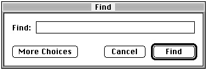
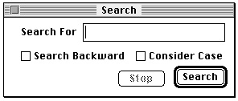

Legacy Document
Important: The information in this document is obsolete and should not be used for new development.
Important: The information in this document is obsolete and should not be used for new development.


Types of Dialog Boxes
Dialog boxes should always require information from the user as well as communicate information to the user. That is, the purpose of a dialog box is to carry on a dialog between the user and your application--typically, in preparation for the execution of
a command. Your dialog boxes can include editable text fields and controls such as checkboxes and radio buttons. With these, the user supplies the information your application needs to carry out the command. There are three types of dialog boxes: modal dialog boxes, movable modal dialog boxes, and modeless dialog boxes. These
are described in the next three sections.Modal Dialog Boxes
Before allowing the user to proceed with any other work, many dialog boxes require the user to click a button. The only response a user receives when clicking outside the dialog box is an alert sound. This type is called a modal dialog box because it puts the user in the state or "mode" of being able to work only inside the dialog box. Also called a fixed-position modal dialog box (to differentiate it from a movable modal dialog box), this type of dialog box looks like an alert box that includes other types of controls in addition to buttons. Figure 6-6 shows the modal dialog box that SurfWriter displays after the user chooses the Spell Check command.
A modal dialog box usually has at least two buttons: OK and Cancel. When the user clicks the OK button, your application should perform the command according to the information provided by the user and then remove the modal dialog box. You can give the OK button a more descriptive title if you wish. When the user clicks the Cancel button, your application should revoke any actions it took since displaying the modal dialog box, and then it should remove the modal dialog box. Always label this button "Cancel." Your dialog boxes can have additional buttons as well; these may or may not dismiss the dialog box.
- IMPORTANT
- Because the user must explicitly dismiss a modal dialog box before doing anything else, you should use a modal dialog box only when it's essential for the user to complete an operation before performing any other work. Fixed-position modal dialog boxes restrict the user's freedom of action; therefore, use them sparingly. As a rule of thumb,
use a modeless dialog box whenever possible, use a movable modal dialog box whenever you can't use a modeless dialog box, and use a fixed-position modal dialog box only when you can't implement the dialog box as modeless or movable.
Every dialog box you create should have a default button--that is, one whose action is invoked when the user presses the Return or Enter key. Unless you provide your own event filter function, the Dialog Manager treats the first item you specify in a description of a dialog box as the default button (that is, so long as the first item is a button). You use an event filter function, described in "Writing an Event Filter Function for Alert and Modal Dialog Boxes" beginning on page 6-86, to supplement the Dialog Manager's ability to handle events; for example, an event filter function can also test for disk- inserted events and can allow background applications to receive update events. If you provide your own event filter function, it should test for key-down events involving the Return and Enter keys and respond as if the default button were clicked. The default button should invoke the preferred action, and you should try to design the preferred action to be safe--that is, so that it doesn't cause loss of data.
Although the Dialog Manager draws bold outlines around default buttons in alert
boxes, it does not draw bold outlines around those in dialog boxes. To indicate the preferred action, your application should outline the default button. "Using an Application-Defined Item to Draw the Bold Outline for a Default Button" beginning on page 6-50 shows a method you can use to outline a button. If you don't outline a
button in a dialog box, none should be the default button, and you must ensure in your event filter function that pressing the Return or Enter key has no effect.Movable Modal Dialog Boxes
The user sometimes needs to see windows obscured by an overlying modal dialog box. In this case, you should use a movable modal dialog box instead of a fixed-position modal dialog box. The movable modal dialog box is a modal dialog box that has a title bar so that the user can move the box by dragging its title bar.The movable modal dialog box contains no close box and should contain no zoom box. These visual clues indicate that the user can move the dialog box, but that the dialog
box is modal--that is, the user must respond to the dialog box before performing any other work in your application. If the user clicks another window belonging to your application, it should play the system alert sound. Your application removes a movable modal dialog box only after the user clicks one of its buttons. Unlike regular modal dialog boxes, however, this type of dialog box allows the user to bring another application to the front by clicking one of its windows or by choosing the application name from the Application or Apple menu.Figure 6-7 shows the movable modal dialog box that the Finder displays after the user chooses the Find command from the File menu.
Figure 6-7 A movable modal dialog box

It's important to consider whether you can use a modeless dialog box instead of a modal or a movable modal dialog box--especially to preserve the user's ability to perform any task in any order.
Movable modal dialog boxes should generally respond like modal dialog boxes. Note, however, that users should be able to switch between your application and another application (thereby sending your application to the background) when you display a movable modal dialog box--an action users cannot perform with modal dialog boxes. For example, Macintosh system software uses several movable modal dialog boxes to show that the Finder is busy with a time-consuming operation (such as file copying), yet a user can still switch the Finder to the background.
Modeless Dialog Boxes
Other dialog boxes do not require the user to respond before doing anything else; these are called modeless dialog boxes. Whenever possible, you should try to implement your dialog boxes as modeless. As shown in Figure 6-8, a modeless dialog box looks like a document window. The user should be able to move it, make it inactive and active again, and close it like any document window. Unlike a document window, it consists mostly of buttons and other controls instead of text, and it contains no scroll bars and no size box. (A modeless dialog box should not have a size box or scroll bars; if you need these features, use the Window Manager to create a window.)Figure 6-8 A modeless dialog box

When you display a modeless dialog box, you must allow the user to perform other operations--such as working in document windows--without dismissing the dialog box. When a user clicks a button in a modeless dialog box, your application should not remove it; instead, the dialog box should remain on the desktop so that the user can perform the command again. Because of the difficulty in revoking the last action invoked from a modeless dialog box, it typically does not have a Cancel button, although it may have a Stop button. A Stop button in a modeless dialog box is useful for halting long printing or searching operations, for example.
When finished with a modeless dialog box, the user can click its close box or choose Close from the File menu (when the dialog box is the active window). Your application should then remove the modeless dialog box. A modeless dialog box is also dismissed implicitly when the user chooses Quit. It's usually helpful to the user for your application to remember the contents of the dialog box after it's dismissed. This way, when the user invokes the dialog box again, even after the user closes and reopens your application, you can restore the dialog box exactly as it was.